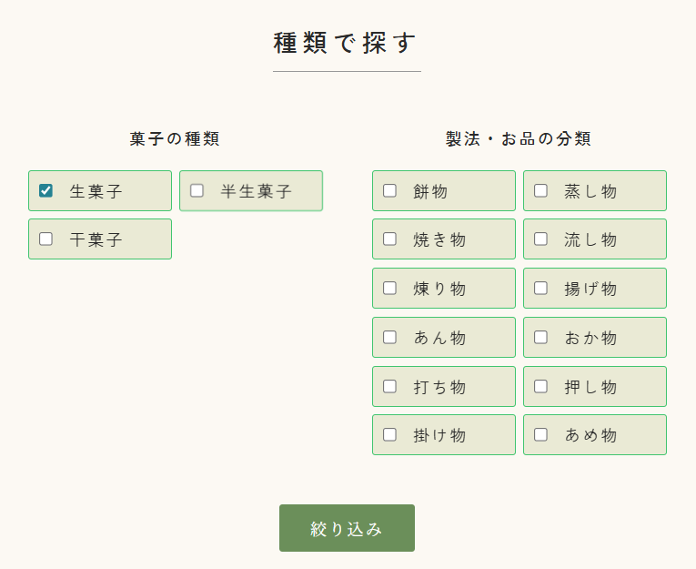
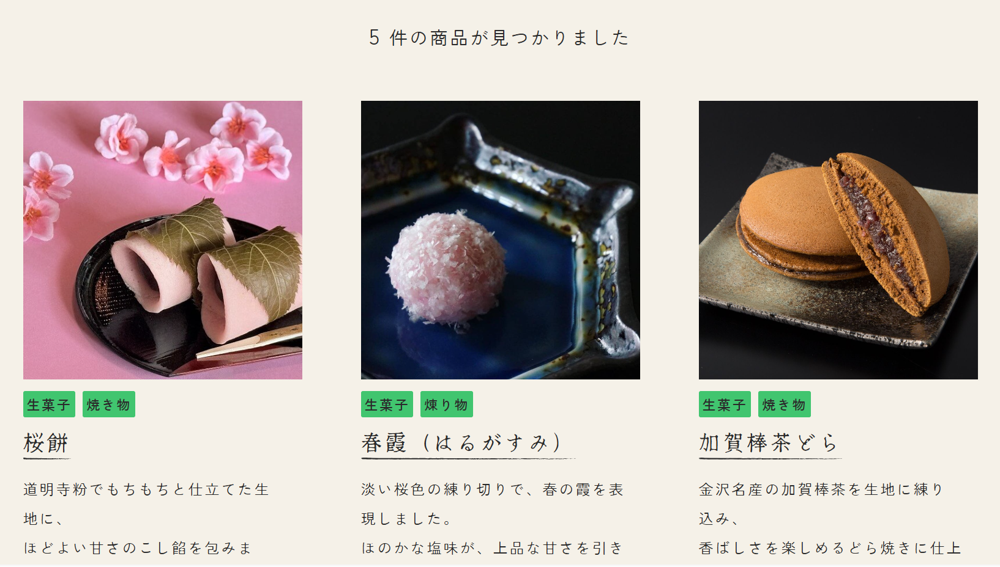
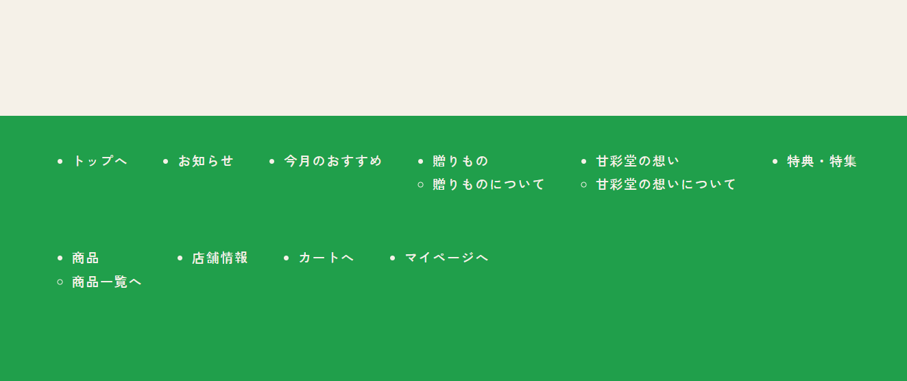

ふくナビ
目的地が決まっていない状態でも、自分の興味に合わせて観光スポットを見つけられるWebアプリです。
キーワード検索ではなく、分類を段階的に選択していくことで、
「探す」だけでなく「選びながら考える」体験を目指しました。

作品概要
福井県の観光スポットを、興味から見つける
作品紹介
ふくナビは、福井県の観光スポットを紹介するWebアプリです。
一般的な観光サイトでは、行きたい場所やキーワードが決まっていることを前提にした検索が多く、土地に詳しくない利用者にとっては使いづらい場合があります。
そこで本作品では、利用者が大分類・中分類・小分類を順番に選択しながら、自分の興味に合う観光スポットを見つけられる構成にしました。
単なる情報検索ではなく、旅行前に行き先を考える時間そのものを楽しめるよう意識しています。
制作情報
- 制作期間
- 5日
- 担当範囲
- 企画 / UI設計 / 実装
- 使用技術
- HTML / CSS / JavaScript
- 制作形態
- インターンシップにて、企業の方のアドバイスを受けながら制作
- 対応状況
- PC版を中心に制作 /
スマートフォンにも対応済み
課題
目的地が決まっていない人には、観光サイトが使いづらい
キーワード検索が前提になっている
観光サイトでは、施設名や地名を入力して探す形式が多く、
利用者があらかじめ目的地を知っている必要があります。
そのため、土地に詳しくない人にとっては、何を検索すればよいか分かりにくいという課題がありました。
定番スポットに情報が偏りやすい
有名な観光地は見つけやすい一方で、自分の興味に合った場所や、
まだ知らない観光スポットに出会いにくいと感じました。
観光地を「名前」ではなく「興味」から探せる仕組みが必要だと考えました。

位置関係が分かりづらい
一覧だけで観光スポットを表示すると、実際の場所や距離感を把握しづらくなります。
旅行計画に活かしやすくするため、一覧情報と地図を同時に確認できる構成が必要だと考えました。
解決策
段階的な選択で、興味に合う観光地へ導く
分類を選ぶ検索体験
大分類/中分類/小分類を順番に選択することで、目的地が明確でない状態でも観光スポットを絞り込めるようにしました。
「歴史・文化」「自然」「温泉・健康」など、利用者の興味を起点に行き先を考えられる設計にしています。
条件を引き継ぐページ遷移
TOPページで選択した条件は、クエリパラメータとして検索結果ページへ受け渡す仕組みにしました。
画面が切り替わっても選択状態が反映されるため、検索の流れが途切れないようにしています。
一覧と地図の同時表示
検索結果ページでは、条件に合う観光スポットの一覧と地図を同時に表示しました。
スポットの情報だけでなく、位置関係や距離感も直感的に把握できるようにしています。
デザイン・UI設計
旅行前のわくわく感を伝える、明るく親しみやすいUIを意識しました。
color
color
color
落ち着いた配色
デザイン面では、旅行前の楽しさや親しみやすさを感じられるよう暖色を基調にしました。
タイトルカラーにはオレンジを使用し、明るさや活発さを表現しています。

分かりやすいUI
観光案内としての分かりやすさを重視し、操作部分はできるだけシンプルに整理しました。
選択肢を段階的に表示することで、利用者が迷いすぎず、自然な流れで検索できるようにしています。
実装・工夫した点
JavaScriptで検索条件を管理し、画面間で状態を保持しました。

CSVデータをもとに分類構造を整理
観光スポットの情報をCSVデータとして扱い、分類ごとに整理しました。
データをもとに表示内容を切り替えることで、条件に応じた検索結果を表示できるようにしています。

クエリパラメータによる条件の受け渡し
TOPページで選択した条件をURLに含め、検索結果ページで読み取る仕組みを実装しました。
これにより、ページ遷移後も選択内容に応じた結果を表示できるようにしています。

地図とカード表示の組み合わせ
検索結果では、観光スポットのカード表示と地図表示を組み合わせました。
視覚的に場所を把握しながら、各スポットの概要も確認できる構成にしています。
振り返り
制作を通して、学んだことと今後の展望をまとめました。
学んだこと
この制作を通して、目的地が決まっていないユーザーに対して、
どのような順番で情報を提示すれば、行き先を選びやすくなるのかというユーザー目線のUIを考える大切さを学びました。
また、クエリパラメータを用いて画面間で検索条件を引き継ぐ仕組みについて理解を深めました。
今後の展望
現在は容量や実装面の都合により、検索結果に表示される画像はサンプル画像を使用しています。
今後は各観光スポットに対応した画像を表示できる仕組みを導入し、一覧を見た段階で場所の雰囲気や魅力が伝わるように改善したいです。
また、地図やスポット情報とのつながりをより分かりやすくし、旅行前の行き先選びから計画づくりまで支えられるアプリに近づけていきたいです。